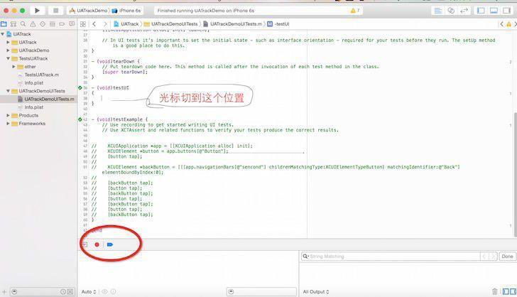

关于iOS的UI自动化测试，Xcode 7 Apple从新提供了一个新的框架UITest，使用XCTest.framework，Xcode可以自动录制UI测试的动作流，还有就是可以使用XCTest UI testing API
基础知识
核心的三个类:XCUIApplication XCUIElement XCUIElementQuery
XCUIApplication类 是Application的代理，就像我们项目工程中的AppDelegate，这个对象用来启动或者是终止UI测试程序，还可以在启动的时候设置一些启动参数，在获取程序中的UI元素的时候，就是通过这个类的实例。这个类继承自XCUIElement类
XCUIElement类 是XCTest.framework对应用中的所有UI控件的抽象，在UI测试中，没有UIKit中的UI类型，只是用这个类的实例表示所有的UI控件，以及相应的交互方法，例如：执行手势（tap，press，swipe），滑动控件交互，拾取器交互，这个类采取了XCUIElementAttributes协议（描述UI元素的属性：Identity，Value，Interaction State，Size），XCUIElementTypeQueryProvider协议(为指定类型的子代元素提供ready-made查询，子代元素查询包含button，具体实现是:@property(readonly, copy) XCUIElementQuery *buttons;等一系列对UIKit中元素的映射)
XCUIElementQuery类 是定位UI元素的查询，这个类使用类似key-value的机制得到XCUIElement的实例，使用Type(XCUIElementType枚举)，Predicate，Identifier创建query，使用elementAtIndex:, elementMatchingPredicate,elementMatchingType: identifier:方法访问匹配到的UI元素，此类采用XCUIElementTypeQueryProvider协议
XCTest一共提供了三种UI测试对象
XCUIApplication 当前测试应用target
XCUIElementQuery 定位查询当前UI中xctuielement的一个类
XCUIElement UI测试中任何一个item项都被抽象成一个XCUIElement类型
因此:当我们获取了录制生成的代码以后，根据UITest提供的三种对象，我可以在此来对测试代码进行修改，调试,我们同样可以使用断言语句来进行测试
UI测试Demo
创建项目时勾选UITest
打开DemoUiTest.m,创建 - (void)testUI函数,同时将光标留在函数内

点击下面的红色按钮，开始recorder操作，程序运行起来后，点击APP界面进行操作,然后光标处就会生成测试代码进行测试
之后我们测试只需要点击test函数前的测试按钮测试这个函数 或者command+u 来进行全部测试
此时刚才的一连串动作会一步一步连续执行下来我们此时可以通过修改这段代码来进行我们想要的测试
比如：- 通过添加循环语句来测试一直执行是否会出现问题,判断内存问题等
- 通过添加断言来判断运行中元素或情况与我们预想是否一致